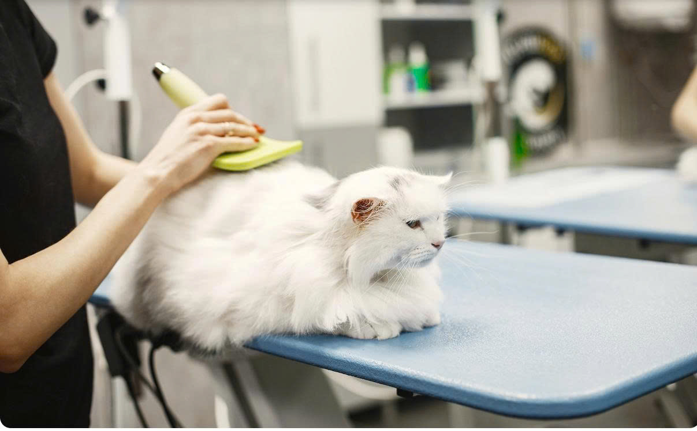

Mèo là loài động vật ưa sạch sẽ và dành phần lớn thời gian tự chải chuốt. Tuy nhiên, để Boss có một cuộc sống khỏe mạnh, bộ lông bóng mượt và những thói quen sinh hoạt tốt, Sen cần nắm vững các kỹ năng chăm sóc và huấn luyện đúng cách dưới đây.
1. Tuyệt chiêu chải lông giảm rụng 90%
Việc chải lông hàng ngày giúp loại bỏ các sợi lông chết trước khi mèo tự liếm và nuốt vào bụng tạo thành các **búi lông** trong dạ dày:
- Mèo lông ngắn: Sử dụng lược chải cao su hoặc găng tay chải lông chuyên dụng chải dọc từ đầu xuống đuôi mỗi tuần 2-3 lần.
- Mèo lông dài (Persian, Maine Coon): Bắt buộc chải hàng ngày bằng lược răng thép để gỡ các nút thắt lông ở vùng bụng và nách.

2. Cắt móng an toàn không chạm tủy
Bóp nhẹ phần đệm chân để các móng vuốt lộ ra. M chỉ được cắt phần đầu móng nhọn màu trắng trong suốt. Tuyệt đối không cắt phạm vào phần màu hồng (tủy móng) vì sẽ làm Boss đau đớn và chảy máu dữ dội, tạo tâm lý sợ hãi cho lần cắt sau.
3. Chế độ chăm sóc mèo theo từng độ tuổi
Mèo con từ 3 đến 6 tháng tuổi
Lúc này, mèo con đang trong độ tuổi phát triển nhanh, bắt đầu có da có thịt hơn. Chăm sóc giai đoạn này có nhiều thay đổi quan trọng:
- Dinh dưỡng: Có thể cai sữa hoàn toàn, cho ăn cơm hoặc pate phối trộn với các loại thịt và bổ sung dưỡng chất.
- Phát triển hệ xương: Bổ sung canxi đều đặn trong chế độ ăn hàng ngày.
- Tập ăn hạt: Cho mèo tập ăn thức ăn hạt khô (có thể trộn thêm một chút sữa ấm nếu mèo chưa quen).
- Nước uống: Luôn chuẩn bị một bát nước sạch bên cạnh bát ăn. Vệ sinh sạch sẽ cả hai bát này thường xuyên.
- Y tế: Tiến hành tẩy giun và tiêm phòng vaccine đầy đủ theo lịch trình của bác sĩ thú y.
Mèo trên 6 tháng tuổi (Giai đoạn trưởng thành)
Chúng trông cứng cáp, có sức đề kháng tốt và thói quen ăn uống thường đã được hình thành cố định từ trước. Tuy nhiên, tính cách mèo trưởng thành đôi khi lại hơi độc lập và thiếu thân thiện hơn:
- Y tế định kỳ: Tẩy giun theo định kỳ tháng và chích ngừa nhắc lại theo định kỳ năm.
- Tâm lý: Tránh các cú sốc tâm lý lớn như đổi chủ hoặc thay đổi môi trường sống đột ngột đối với mèo trên 2 tuổi. Việc huấn luyện thay đổi thói quen cũ lúc này sẽ gặp nhiều khó khăn hơn.
- Thực phẩm độc hại: Tuyệt đối tránh các loại thức ăn dễ gây ngộ độc như sô-cô-la, hành, tỏi, caffeine...
Cảnh báo sức khỏe:
Đối với bất kỳ hiện tượng bất thường nào như nôn mửa, đi ngoài, nổi mẩn đỏ khắp cơ thể, bỏ ăn... sen cần đưa mèo đến ngay cơ sở y tế thú y gần nhất để được cứu chữa kịp thời!
4. Huấn luyện mèo tạo thói quen sinh hoạt tốt
Song song với dinh dưỡng, việc rèn luyện tính kỷ luật ngay từ khi còn nhỏ sẽ giúp việc nuôi mèo sau này cực kỳ nhàn nhã.
Huấn luyện đi vệ sinh đúng chỗ
Để mèo ngoan ngoãn đi vệ sinh vào khay cát, sen cần chuẩn bị các bước sau:
- Tạo một khu vệ sinh cố định, đặt ở nơi yên tĩnh, kín đáo, không bị làm phiền bởi con người, tiếng động lớn hay chó dữ.
- Sử dụng khay vệ sinh hoặc chậu cát chuyên dụng và đảm bảo dọn sạch chất thải hàng ngày. Tránh thay đổi đột ngột mùi hương của cát quá nồng.
- Mẹo xử lý khi đi bậy: Nên khử mùi chỗ đi vệ sinh bậy của mèo bằng xăng hoặc dầu hôi để xóa dấu vết mùi cũ. Sau đó, bế mèo đặt vào đúng khay cát m muốn chúng đi. Lặp lại khoảng 2-3 lần như vậy sẽ tạo được phản xạ tự nhiên cho Boss.

Vệ sinh răng miệng phòng bệnh khoang miệng
Mèo rất dễ gặp các bệnh về răng miệng như cao răng, hôi miệng, viêm nướu, răng yếu... Cách chải răng chuẩn khoa học:
- Sử dụng bàn chải và kem đánh răng chuyên dụng dành riêng cho thú cưng (Tuyệt đối không dùng kem đánh răng của người).
- Trước khi chải, nên cho mèo nếm thử hương vị của kem đánh răng để chúng làm quen và không hoảng sợ.
- Thao tác chải răng nhanh gọn, nhẹ nhàng và kéo dài không quá 30 giây.
- Liên tục kiểm tra các mảng bám tích tụ trên bề mặt răng, đặc biệt ở các khu vực khuất sâu trong khoang miệng.